ブランド制作（卒業制作）
RIVOLIO
移ろう季節の時間の流れを、雫というひとつのカタチに込めたガラスアクセサリーのブランド
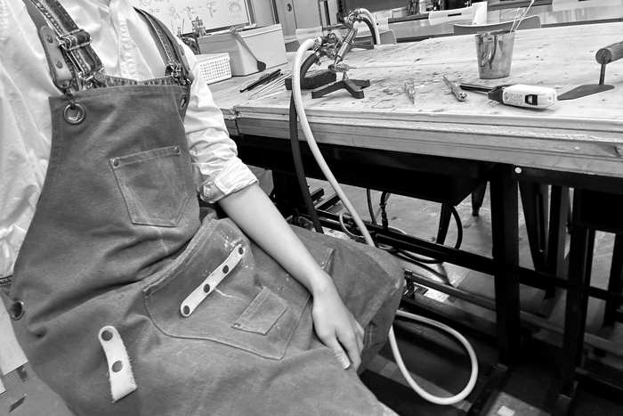
01 RIVOLIO
ロゴとブランドの考え方
季節で移り変わる木に、実のように雫を下げたロゴ
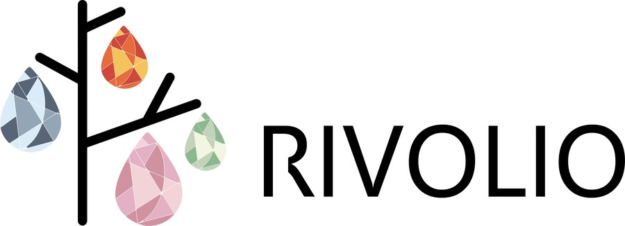
私たちの生活は、日々過ごす日常の中を、
自然と流れ、共に過ごしていく
01ブランドの考え
春・夏・秋・冬、季節のなかで私たちは日常を送っています。その一人ひとりの時間の流れを、雫の形のアクセサリーにしました。
02ロゴに込めたこと
モチーフは、季節とともにうつり変わる一本の木です。枝にみのる実のように雫を下げることで、季節がめぐるたびに違う実（雫）がなる、という見立てにしました。首から下げて身につけること自体も、枝から下がる実の姿に重ねています。
034色は四季そのもの
雫の色は、春は桜のような桃色、夏は若葉の緑、秋は紅葉の橙、冬は氷のような青。ロゴの4色は飾りではなく、季節ごとの商品の色です。どの季節の雫かが、色だけで分かります。
春Spring
- #F1D3D8
- #E4B0C3
- #D092A1
夏Summer
- #F2F5E1
- #C2D3B9
- #8DB790
秋Autumn
- #F3C35C
- #E66C3E
- #CE483B
冬Winter
- #DBECF9
- #94A5B5
- #586576
02 RIVOLIO
市場調査
ガラスアクセサリーの市場を、二軸で整理しました
01見たこと
ガラスのアクセサリーを、つくり手の性格（ハンドメイド品／工芸品）と、形の方向（具象的／抽象的）の二軸に並べました。
02分かったこと
ハンドメイド品は、作家ごとの好みがそのまま形に出ていて、表現の幅が広いことが分かりました。工芸品は、伝統の製法や技術から生まれる形で、素直な形のものから模様で見せるものまでありました。
03ここから決めたこと
ハンドメイド品の側に立つことにしました。作り手の個性がそのまま形に出るからです。手がかりにしたのは「季節」。誰の日常にもあるものなので、作り手の個性と、買う人の実感の両方が成り立ちます。
01ターゲットTarget
想定している買い手
20代前半の女性
どんな人をイメージしているか
- ハンドメイド作品が好きな人
- 雑貨やアクセサリーが好きな人
- ファッションや季節の移ろいに敏感な人
02お客さまにとっての価値Value
- つくり手の手仕事に共感できる
- 買ったあと、その人なりの付き合い方ができる
- 身につけて季節を感じられる
03販売の想定Channel
03 RIVOLIO
制作工程
ひとつずつ、手作業で制作しました
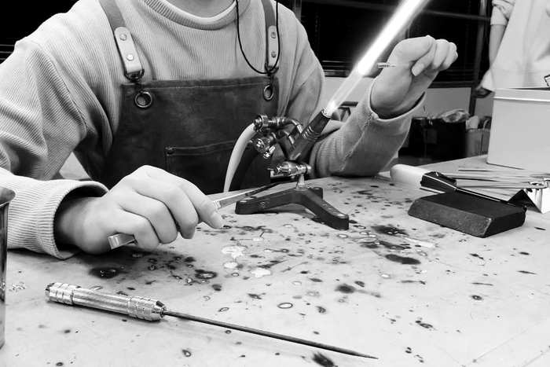
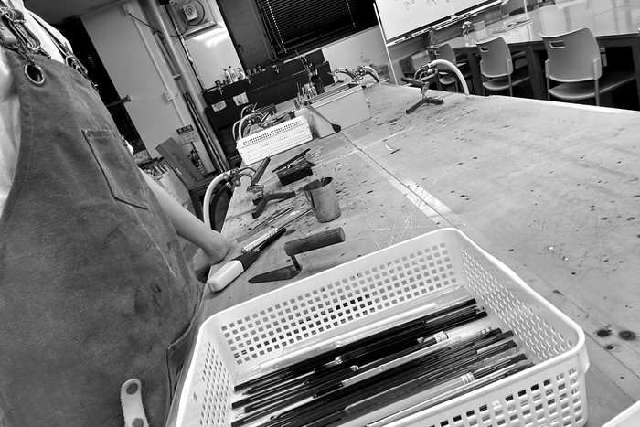
01手作業でつくる
ガラスは学校の工房で、ひとつずつ手で作りました。色ガラスの棒をバーナーの炎で溶かし、一本ずつ配色を決めながら雫の形に成形しています。
02ねじって気泡を入れる
溶かしたガラスをねじって、内側に気泡を閉じこめています。気泡と、ねじりから生まれる渦の流れで、季節がうつろう感じや、水の中を泡が立ちのぼる様子を表しました。
03色のグラデーション
一番むずかしかったのは色のグラデーションです。色ガラスは種類によって溶け方も色の出方も違うため、季節ごとに狙った濃淡の差を出すのに苦戦しました。手で作るぶん、同じ季節の雫でも濃淡はひとつずつ違います。それも含めて商品にしています。
04チェーンは金色に
最後にチェーンを合わせます。金色を主体にしたのは、雫がどれも淡い色だからです。金色を挟むと全体のトーンがそろい、四季どの色と合わせても雫の色が沈まずに見えます。
04 RIVOLIO
パッケージ
箱は共通にして、スリーブの色で季節を分けました
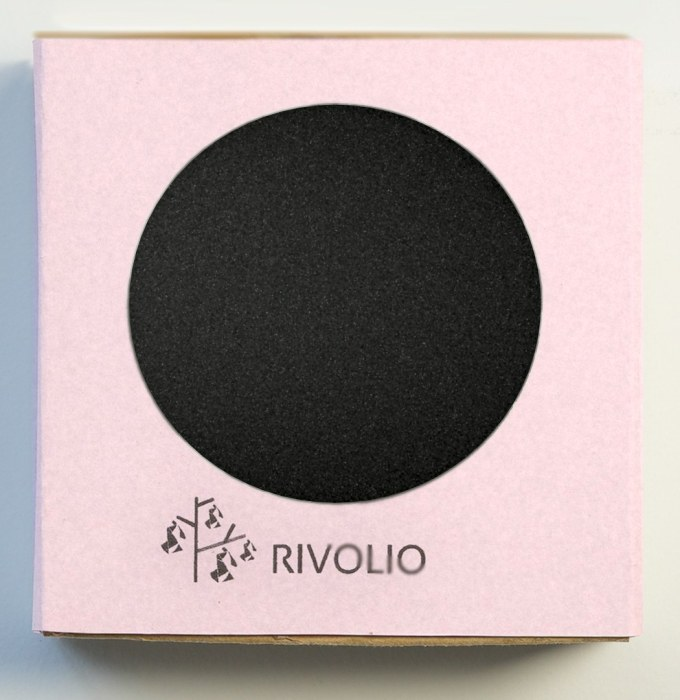
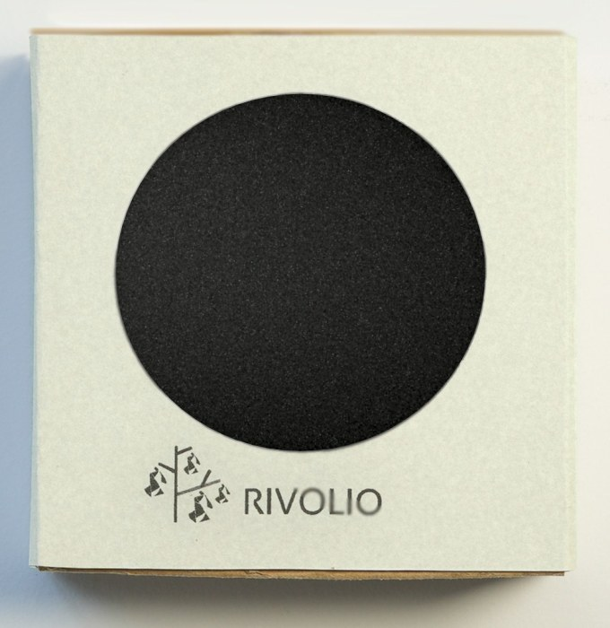
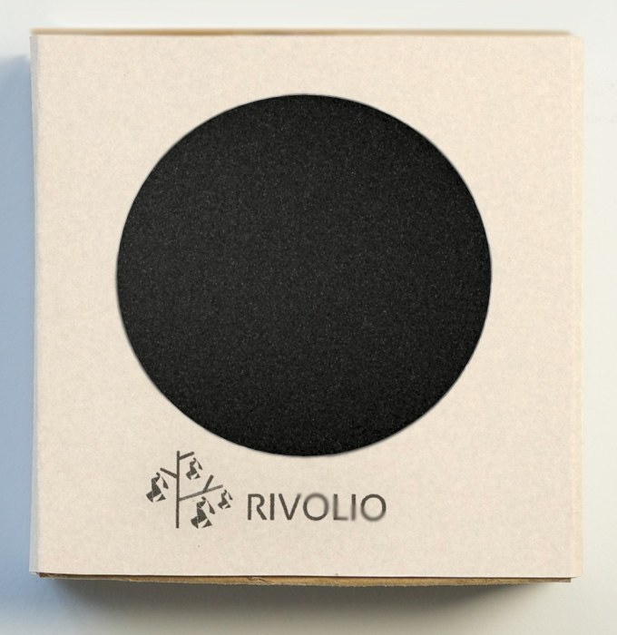
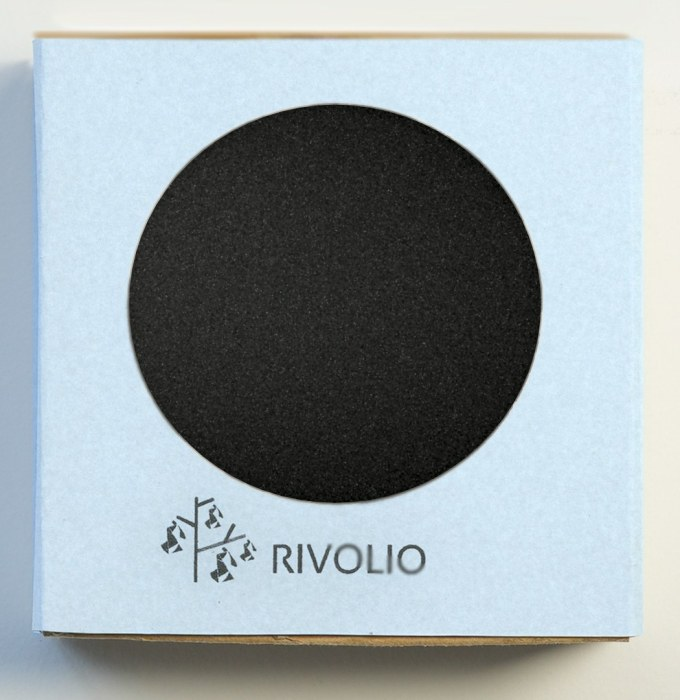
スリーブの色展開（イメージ）
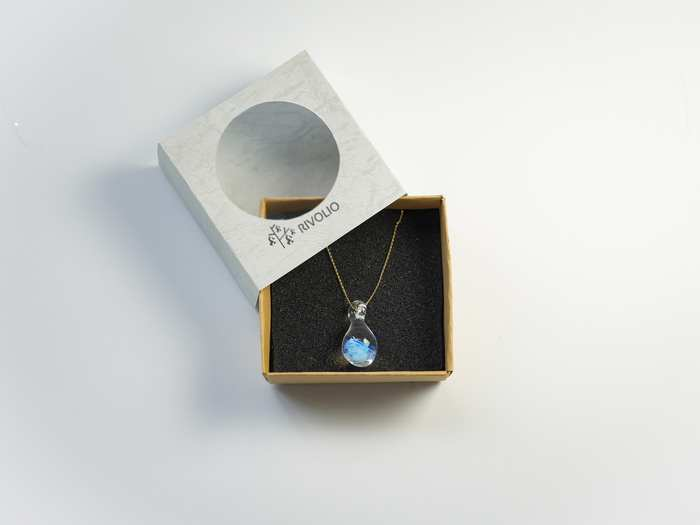
01箱とスリーブ
中の箱は通年で使う白い箱にし、外側のスリーブだけを季節の色で替えるようにしました。箱が共通なので、季節が変わっても同じブランドの商品として並べられます。
02中の見せ方
丸く抜いた窓から、黒い台紙に留めた雫が見えます。箱を開ける前から、どの季節の色かが分かります。
Final完成作品
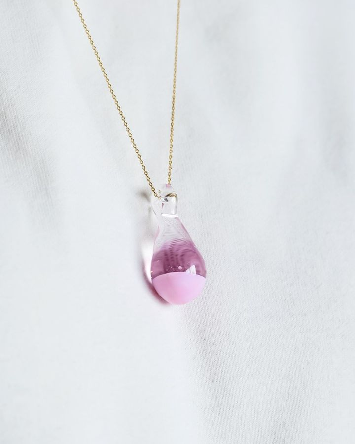
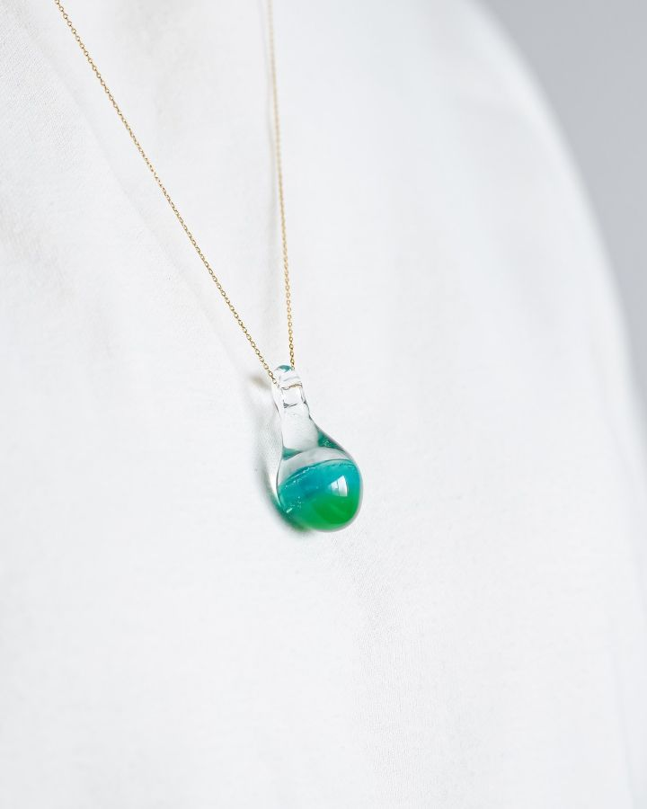
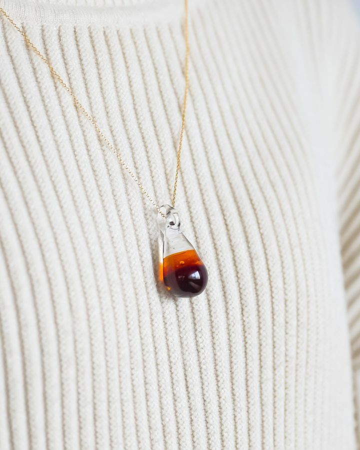
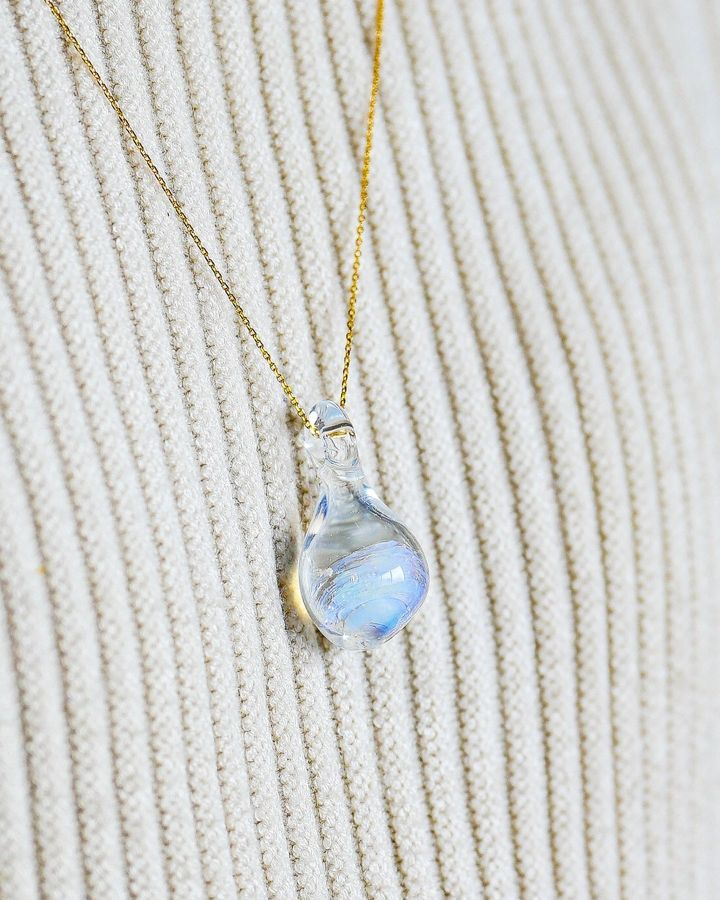